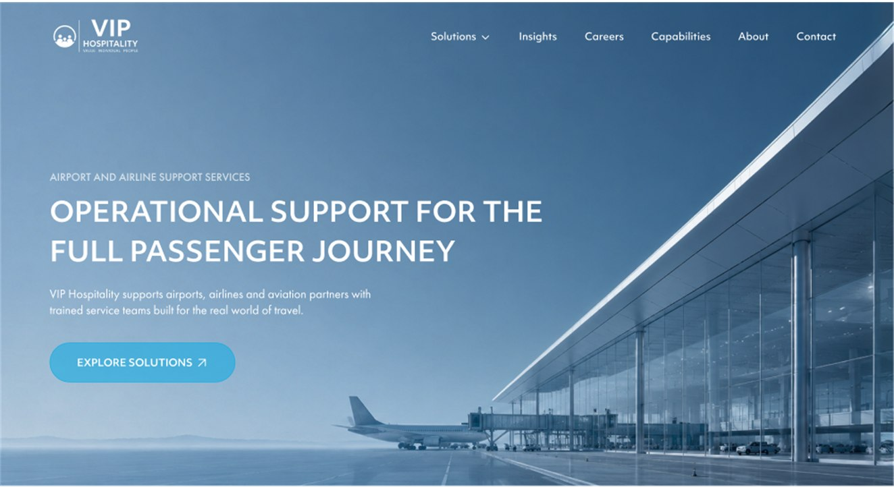
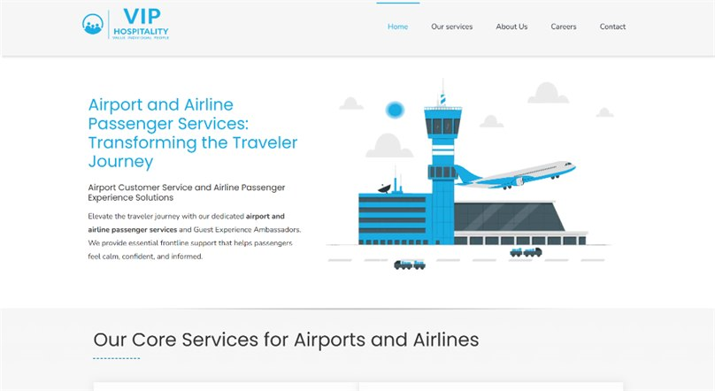
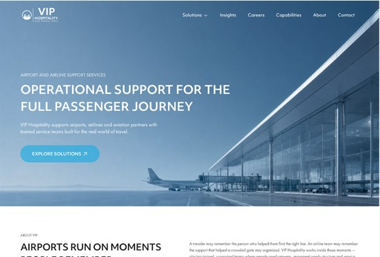
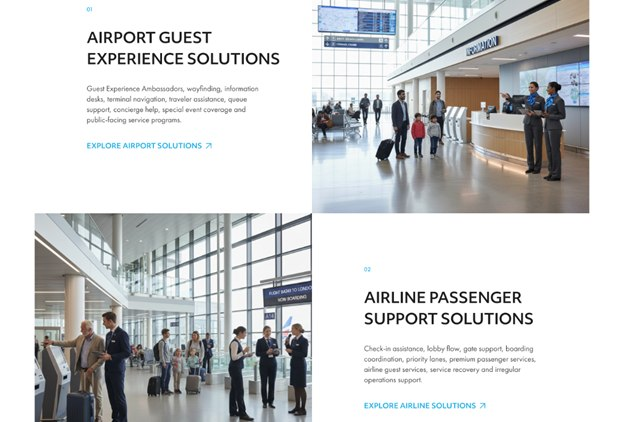
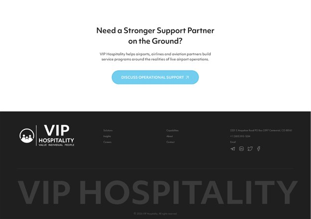
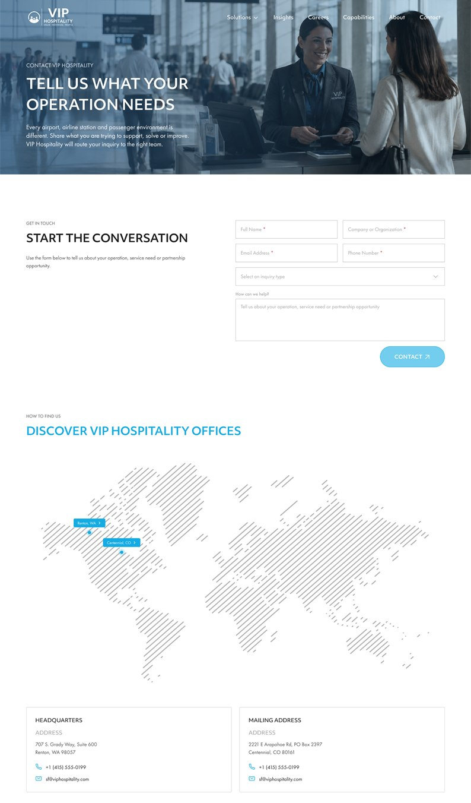

Aviation services / Website redesign
VIP HOSPITALITY
Redesigning VIP Hospitality’s dated website to clarify its services and create a clearer path to inquiry.

01 / Overview
A clearer service story, with inquiry in view.
The previous website felt dated and made VIP Hospitality’s broad offer difficult to navigate. I redesigned it for airport and airline decision-makers, clarifying the two core service areas and making related capabilities and contact options easier to find.
- Role
- UX/UI design
- Users
- Airports & airlines
- Platform
- Corporate website
- Workflows
- Redesign · services · conversion
02 / The challenge
Modernize the site and make inquiry easier.
The old site presented services in a dated layout, making it harder for airport and airline decision-makers to see where VIP could help. The redesign needed to explain the two main service areas, keep other capabilities visible, and guide prospective clients toward a relevant inquiry.

03 / Key workflows
A clearer journey from first impression to inquiry.
-

01Refresh the first impression
Replace the dated presentation with a current, aviation-focused visual direction.
-

02Clarify the service offer
Separate the two core service areas and make related capabilities easier to scan.
-

03Make the next step visible
Use focused calls to action to move prospective clients toward a conversation.
04 / The solution
From service discovery to a direct inquiry.
The redesigned site brings Airport Guest Experience and Airline Passenger Support forward, with related capabilities easier to find. The contact page lets prospective partners choose an inquiry type and share their organization and needs, creating a clearer route from exploring services to contacting VIP. The redesign aimed to improve conversion by making the next step easier to take.

Redesign goals / website structure
Built around three priorities.
- REDESIGNUpdated visual direction
- SERVICESClearer service pathways
- INQUIRIESDirect contact prompts